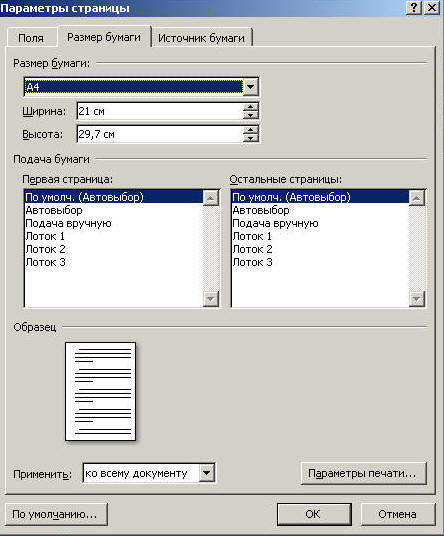

В MS Word 2007 выбрать размер страницы можно двумя способами:
I. На вкладке Разметка страницы в группе Размер выберите нужный размер.
В случае, если Вас не устраивают стандартные размеры страницы - выберите Другие размеры страниц, в появившемся диалоговом окне на вкладке Размер бумаги установите нужный размер бумаги.

II. На вкладке Разметка страницы выберите группу Параметры страницы. В появившемся диалоговом окне (см. рис. выше) на вкладке Размер бумаги установите нужный размер бумаги.
Назад | Содержание | Вперед